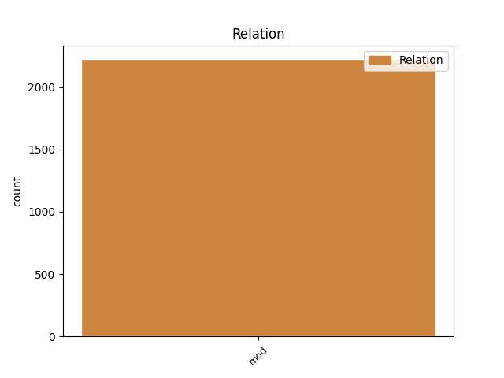
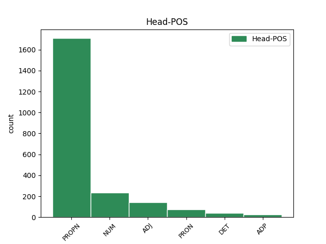
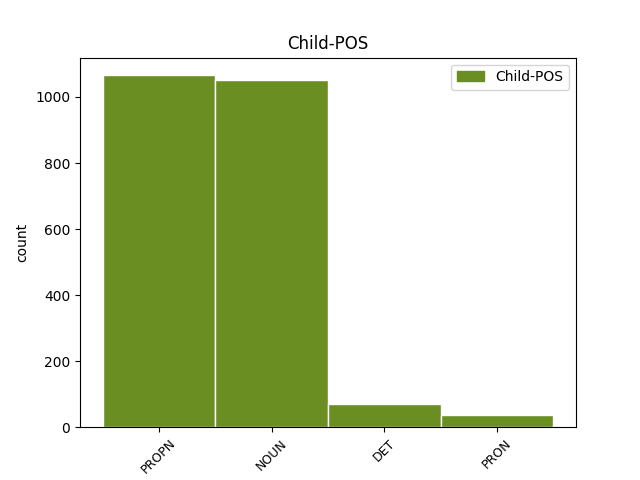

Distribution of features within this leaf



Agreement Rules sorted by frequency.
- When the dependent token is the modifer(mod) of the head token, and the head token is PROPN and the dependent token is PROPN.
1 Dále _ _ _ _ 0 _ _ _
2 pak _ _ _ _ 0 _ _ _
3 na _ _ _ _ 0 _ _ _
4 místě _ _ _ _ 0 _ _ _
5 jména _ _ _ _ 0 _ _ _
6 Johánka _ _ _ _ 0 _ _ _
7 z _ _ _ _ 0 _ _ _
8 Dubé _ _ _ _ 0 _ _ _
9 vzniká _ _ _ _ 0 _ _ _
10 vymazáním _ _ _ _ 0 _ _ _
11 příjmení _ _ _ _ 0 _ _ _
12 " _ _ _ _ 0 _ _ _
13 Dubé _ _ _ _ 0 _ _ _
14 " _ _ _ _ 0 _ _ _
15 a _ _ _ _ 0 _ _ _
16 přepsáním _ _ _ _ 0 _ _ _
17 příjmení _ _ _ _ 0 _ _ _
18 " _ _ _ _ 0 _ _ _
19 Pomuk _ _ _ _ 0 _ _ _
20 " _ _ _ _ 0 _ _ _
21 nové _ _ _ _ 0 _ _ _
22 jméno _ _ _ _ 0 _ _ _
23 " _ _ _ _ 0 _ _ _
24 Johannes Johannes PROPN NNMS1-----A---- Animacy=Anim|Case=Nom|Gender=Masc|NameType=Giv|Number=Sing|Polarity=Pos 0 _ _ _
25 d _ _ _ _ 0 _ _ _
26 ' _ _ _ _ 0 _ _ _
27 Pomuk Pomuk PROPN NNIS1-----A---- Animacy=Inan|Case=Nom|Gender=Masc|NameType=Geo|Number=Sing|Polarity=Pos 24 mod _ SpaceAfter=No
28 " _ _ _ _ 0 _ _ _
29 . _ _ _ _ 0 _ _ _
1 Při _ _ _ _ 0 _ _ _
2 nácviku _ _ _ _ 0 _ _ _
3 boje _ _ _ _ 0 _ _ _
4 se _ _ _ _ 0 _ _ _
5 sekerou _ _ _ _ 0 _ _ _
6 nám _ _ _ _ 0 _ _ _
7 velmi _ _ _ _ 0 _ _ _
8 pomohli _ _ _ _ 0 _ _ _
9 členové člen NOUN NNMP1-----A---- Animacy=Anim|Case=Nom|Gender=Masc|Number=Plur|Polarity=Pos 18 mod _ _
10 skupiny _ _ _ _ 0 _ _ _
11 historického _ _ _ _ 0 _ _ _
12 šermu _ _ _ _ 0 _ _ _
13 " _ _ _ _ 0 _ _ _
14 Tulichy _ _ _ _ 0 _ _ _
15 vulgo _ _ _ _ 0 _ _ _
16 zrazichy _ _ _ _ 0 _ _ _
17 " _ _ _ _ 0 _ _ _
18 Štylfríd Štylfríd PROPN NNMS1-----A---- Animacy=Anim|Case=Nom|Gender=Masc|NameType=Giv|Number=Sing|Polarity=Pos 0 _ _ _
19 a _ _ _ _ 0 _ _ _
20 Mojslav _ _ _ _ 0 _ _ _
21 , _ _ _ _ 0 _ _ _
22 kteří _ _ _ _ 0 _ _ _
23 si _ _ _ _ 0 _ _ _
24 přejí _ _ _ _ 0 _ _ _
25 být _ _ _ _ 0 _ _ _
26 uvedeni _ _ _ _ 0 _ _ _
27 pouze _ _ _ _ 0 _ _ _
28 křestními _ _ _ _ 0 _ _ _
29 jmény _ _ _ _ 0 _ _ _
30 . _ _ _ _ 0 _ _ _
1 skupiny _ _ _ _ 0 _ _ _
2 onemocnění _ _ _ _ 0 _ _ _
3 dohromady _ _ _ _ 0 _ _ _
4 tvoří _ _ _ _ 0 _ _ _
5 u _ _ _ _ 0 _ _ _
6 obou _ _ _ _ 0 _ _ _
7 pohlaví _ _ _ _ 0 _ _ _
8 přibližně _ _ _ _ 0 _ _ _
9 devět _ _ _ _ 0 _ _ _
10 desetin desetina NUM CyFP2---------- Case=Gen|Gender=Fem|Number=Plur|NumType=Frac 0 _ _ _
11 všech _ _ _ _ 0 _ _ _
12 úmrtí úmrtí NOUN NNNP2-----A---- Case=Gen|Gender=Neut|Number=Plur|Polarity=Pos 10 mod _ _
13 ( _ _ _ _ 0 _ _ _
14 55 _ _ _ _ 0 _ _ _
15 % _ _ _ _ 0 _ _ _
16 nemoci _ _ _ _ 0 _ _ _
17 oběhové _ _ _ _ 0 _ _ _
18 soustavy _ _ _ _ 0 _ _ _
19 , _ _ _ _ 0 _ _ _
20 21 _ _ _ _ 0 _ _ _
21 % _ _ _ _ 0 _ _ _
22 novotvary _ _ _ _ 0 _ _ _
23 , _ _ _ _ 0 _ _ _
24 7 _ _ _ _ 0 _ _ _
25 % _ _ _ _ 0 _ _ _
26 poranění _ _ _ _ 0 _ _ _
27 a _ _ _ _ 0 _ _ _
28 otravy _ _ _ _ 0 _ _ _
29 a _ _ _ _ 0 _ _ _
30 5 _ _ _ _ 0 _ _ _
31 % _ _ _ _ 0 _ _ _
32 nemoci _ _ _ _ 0 _ _ _
33 trávicí _ _ _ _ 0 _ _ _
34 soustavy _ _ _ _ 0 _ _ _
35 ) _ _ _ _ 0 _ _ _
36 . _ _ _ _ 0 _ _ _
1 O _ _ _ _ 0 _ _ _
2 J _ _ _ _ 0 _ _ _
3 . _ _ _ _ 0 _ _ _
4 Z _ _ _ _ 0 _ _ _
5 . _ _ _ _ 0 _ _ _
6 Neví _ _ _ _ 0 _ _ _
7 nic _ _ _ _ 0 _ _ _
8 ani _ _ _ _ 0 _ _ _
9 jeho _ _ _ _ 0 _ _ _
10 nejbližší _ _ _ _ 0 _ _ _
11 stálý _ _ _ _ 0 _ _ _
12 spolupracovník _ _ _ _ 0 _ _ _
13 RNDr _ _ _ _ 0 _ _ _
14 . _ _ _ _ 0 _ _ _
15 František František PROPN NNMS1-----A---- Animacy=Anim|Case=Nom|Gender=Masc|NameType=Giv|Number=Sing|Polarity=Pos 16 mod _ _
16 Smutný smutný ADJ AAFP1----1A---6 Case=Nom|Degree=Pos|Gender=Fem|Number=Plur|Polarity=Pos|Style=Coll 0 _ _ _
17 , _ _ _ _ 0 _ _ _
18 CSc _ _ _ _ 0 _ _ _
19 . _ _ _ _ 0 _ _ _
1 O _ _ _ _ 0 _ _ _
2 J _ _ _ _ 0 _ _ _
3 . _ _ _ _ 0 _ _ _
4 Z _ _ _ _ 0 _ _ _
5 . _ _ _ _ 0 _ _ _
6 Neví _ _ _ _ 0 _ _ _
7 nic _ _ _ _ 0 _ _ _
8 ani _ _ _ _ 0 _ _ _
9 jeho _ _ _ _ 0 _ _ _
10 nejbližší _ _ _ _ 0 _ _ _
11 stálý _ _ _ _ 0 _ _ _
12 spolupracovník spolupracovník NOUN NNMS1-----A---- Animacy=Anim|Case=Nom|Gender=Masc|Number=Sing|Polarity=Pos 16 mod _ _
13 RNDr _ _ _ _ 0 _ _ _
14 . _ _ _ _ 0 _ _ _
15 František _ _ _ _ 0 _ _ _
16 Smutný smutný ADJ AAFP1----1A---6 Case=Nom|Degree=Pos|Gender=Fem|Number=Plur|Polarity=Pos|Style=Coll 0 _ _ _
17 , _ _ _ _ 0 _ _ _
18 CSc _ _ _ _ 0 _ _ _
19 . _ _ _ _ 0 _ _ _
1 Pro _ _ _ _ 0 _ _ _
2 nás já PRON PP-P4--1------- Case=Acc|Number=Plur|Person=1|PronType=Prs 0 _ _ _
3 badatele badatel NOUN NNMP4-----A---- Animacy=Anim|Case=Acc|Gender=Masc|Number=Plur|Polarity=Pos 2 mod _ _
4 je _ _ _ _ 0 _ _ _
5 důležitá _ _ _ _ 0 _ _ _
6 skutečnost _ _ _ _ 0 _ _ _
7 , _ _ _ _ 0 _ _ _
8 že _ _ _ _ 0 _ _ _
9 každý _ _ _ _ 0 _ _ _
10 zásah _ _ _ _ 0 _ _ _
11 vyžaduje _ _ _ _ 0 _ _ _
12 spoustu _ _ _ _ 0 _ _ _
13 informací _ _ _ _ 0 _ _ _
14 , _ _ _ _ 0 _ _ _
15 které _ _ _ _ 0 _ _ _
16 musíme _ _ _ _ 0 _ _ _
17 znát _ _ _ _ 0 _ _ _
18 předem _ _ _ _ 0 _ _ _
19 . _ _ _ _ 0 _ _ _
1 Lac Lac PROPN NNIS1-----A---- Animacy=Inan|Case=Nom|Gender=Masc|NameType=Geo|Number=Sing|Polarity=Pos 2 mod _ _
2 de de ADP RR--1---------- AdpType=Prep|Case=Nom|Foreign=Yes 0 _ _ _
3 Madine _ _ _ _ 0 _ _ _
4 - _ _ _ _ 0 _ _ _
1 A _ _ _ _ 0 _ _ _
2 především _ _ _ _ 0 _ _ _
3 , _ _ _ _ 0 _ _ _
4 nikdo _ _ _ _ 0 _ _ _
5 nedovede _ _ _ _ 0 _ _ _
6 určit _ _ _ _ 0 _ _ _
7 , _ _ _ _ 0 _ _ _
8 proč _ _ _ _ 0 _ _ _
9 , _ _ _ _ 0 _ _ _
10 z _ _ _ _ 0 _ _ _
11 jaké _ _ _ _ 0 _ _ _
12 příčiny _ _ _ _ 0 _ _ _
13 , _ _ _ _ 0 _ _ _
14 obvykle _ _ _ _ 0 _ _ _
15 až _ _ _ _ 0 _ _ _
16 po _ _ _ _ 0 _ _ _
17 několika několik DET Ca--6---------- Case=Loc|NumType=Card|PronType=Ind 0 _ _ _
18 letech rok NOUN NNNP6-----A---- Case=Loc|Gender=Neut|Number=Plur|Polarity=Pos 17 mod _ _
19 " _ _ _ _ 0 _ _ _
20 spánku _ _ _ _ 0 _ _ _
21 " _ _ _ _ 0 _ _ _
22 v _ _ _ _ 0 _ _ _
23 lidských _ _ _ _ 0 _ _ _
24 buňkách _ _ _ _ 0 _ _ _
25 ( _ _ _ _ 0 _ _ _
26 integrován _ _ _ _ 0 _ _ _
27 v _ _ _ _ 0 _ _ _
28 lidské _ _ _ _ 0 _ _ _
29 DNA _ _ _ _ 0 _ _ _
30 ) _ _ _ _ 0 _ _ _
31 , _ _ _ _ 0 _ _ _
32 se _ _ _ _ 0 _ _ _
33 najednou _ _ _ _ 0 _ _ _
34 HIV _ _ _ _ 0 _ _ _
35 probudí _ _ _ _ 0 _ _ _
36 a _ _ _ _ 0 _ _ _
37 způsobuje _ _ _ _ 0 _ _ _
38 aids _ _ _ _ 0 _ _ _
39 . _ _ _ _ 0 _ _ _
1 Co _ _ _ _ 0 _ _ _
2 nedovedu _ _ _ _ 0 _ _ _
3 sám _ _ _ _ 0 _ _ _
4 jasně _ _ _ _ 0 _ _ _
5 říct _ _ _ _ 0 _ _ _
6 , _ _ _ _ 0 _ _ _
7 není _ _ _ _ 0 _ _ _
8 jasné _ _ _ _ 0 _ _ _
9 ani _ _ _ _ 0 _ _ _
10 mně já PRON PP-S3--1------- Case=Dat|Number=Sing|Person=1|PronType=Prs 0 _ _ _
11 samému samý PRON PLZS3---------- Case=Dat|Gender=Masc,Neut|Number=Sing|PronType=Tot 10 mod _ SpaceAfter=No
12 . _ _ _ _ 0 _ _ _
1 dnes _ _ _ _ 0 _ _ _
2 , _ _ _ _ 0 _ _ _
3 kdy _ _ _ _ 0 _ _ _
4 se _ _ _ _ 0 _ _ _
5 obětí _ _ _ _ 0 _ _ _
6 IRA _ _ _ _ 0 _ _ _
7 stávají _ _ _ _ 0 _ _ _
8 stále _ _ _ _ 0 _ _ _
9 častěji _ _ _ _ 0 _ _ _
10 objekty _ _ _ _ 0 _ _ _
11 a _ _ _ _ 0 _ _ _
12 osoby _ _ _ _ 0 _ _ _
13 v _ _ _ _ 0 _ _ _
14 samé samý PRON PLFS6---------- Case=Loc|Gender=Fem|Number=Sing|PronType=Tot 15 mod _ _
15 Anglii Anglie PROPN NNFS6-----A---- Case=Loc|Gender=Fem|NameType=Geo|Number=Sing|Polarity=Pos 0 _ _ _
16 a _ _ _ _ 0 _ _ _
17 ne _ _ _ _ 0 _ _ _
18 pouze _ _ _ _ 0 _ _ _
19 v _ _ _ _ 0 _ _ _
20 Ulsteru _ _ _ _ 0 _ _ _
21 , _ _ _ _ 0 _ _ _
22 však _ _ _ _ 0 _ _ _
23 už _ _ _ _ 0 _ _ _
24 i _ _ _ _ 0 _ _ _
25 jejich _ _ _ _ 0 _ _ _
26 odolnost _ _ _ _ 0 _ _ _
27 polevuje _ _ _ _ 0 _ _ _
28 . _ _ _ _ 0 _ _ _
1 Brasília _ _ _ _ 0 _ _ _
2 ( _ _ _ _ 0 _ _ _
3 Od od ADP RR--2---------- AdpType=Prep|Case=Gen 0 _ _ _
4 naší _ _ _ _ 0 _ _ _
5 spolupracovnice spolupracovnice NOUN NNFS2-----A---- Case=Gen|Gender=Fem|Number=Sing|Polarity=Pos 3 mod _ LDeriv=spolupracovník|SpaceAfter=No
6 ) _ _ _ _ 0 _ _ _
7 - _ _ _ _ 0 _ _ _
1 My já PRON PP-P1--1------- Case=Nom|Number=Plur|Person=1|PronType=Prs 0 _ _ _
2 Kladeňáci Kladeňák PROPN NNMP1-----A---- Animacy=Anim|Case=Nom|Gender=Masc|NameType=Nat|Number=Plur|Polarity=Pos|Style=Coll 1 mod _ _
3 jsme _ _ _ _ 0 _ _ _
4 hrdi _ _ _ _ 0 _ _ _
5 na _ _ _ _ 0 _ _ _
6 to _ _ _ _ 0 _ _ _
7 , _ _ _ _ 0 _ _ _
8 že _ _ _ _ 0 _ _ _
9 tady _ _ _ _ 0 _ _ _
10 hrajeme _ _ _ _ 0 _ _ _
11 . _ _ _ _ 0 _ _ _
12 " _ _ _ _ 0 _ _ _
1 Ten ten DET PDYS1---------- Case=Nom|Gender=Masc|Number=Sing|PronType=Dem 0 _ _ _
2 někdo někdo PRON PZM-1---------- Animacy=Anim|Case=Nom|Gender=Masc|PronType=Ind 1 mod _ _
3 byli _ _ _ _ 0 _ _ _
4 samozřejmě _ _ _ _ 0 _ _ _
5 Češi _ _ _ _ 0 _ _ _
6 , _ _ _ _ 0 _ _ _
7 kteří _ _ _ _ 0 _ _ _
8 znemožňovali _ _ _ _ 0 _ _ _
9 Slovákům _ _ _ _ 0 _ _ _
10 se _ _ _ _ 0 _ _ _
11 zviditelnit _ _ _ _ 0 _ _ _
12 . _ _ _ _ 0 _ _ _
1 Demokracie _ _ _ _ 0 _ _ _
2 triumfovala _ _ _ _ 0 _ _ _
3 , _ _ _ _ 0 _ _ _
4 komunistické _ _ _ _ 0 _ _ _
5 režimy _ _ _ _ 0 _ _ _
6 zanikly _ _ _ _ 0 _ _ _
7 , _ _ _ _ 0 _ _ _
8 a _ _ _ _ 0 _ _ _
9 tak _ _ _ _ 0 _ _ _
10 nemá _ _ _ _ 0 _ _ _
11 jiného _ _ _ _ 0 _ _ _
12 nepřítele _ _ _ _ 0 _ _ _
13 než _ _ _ _ 0 _ _ _
14 sebe se PRON P6-X4---------- Case=Acc|PronType=Prs|Reflex=Yes 0 _ _ _
15 samu sám DET PLFS4---------- Case=Acc|Gender=Fem|Number=Sing|PronType=Emp 14 mod _ LGloss=(samotný)|SpaceAfter=No
16 . _ _ _ _ 0 _ _ _
1 Na _ _ _ _ 0 _ _ _
2 třicet _ _ _ _ 0 _ _ _
3 ázerbájdžánských _ _ _ _ 0 _ _ _
4 vojáků _ _ _ _ 0 _ _ _
5 a _ _ _ _ 0 _ _ _
6 dva dva NUM ClYP1---------- Case=Nom|Gender=Masc|Number=Plur|NumForm=Word|NumType=Card|NumValue=1,2,3 0 _ _ _
7 Arménci Arménec PROPN NNMP1-----A---- Animacy=Anim|Case=Nom|Gender=Masc|NameType=Nat|Number=Plur|Polarity=Pos 6 mod _ _
8 byli _ _ _ _ 0 _ _ _
9 zabiti _ _ _ _ 0 _ _ _
10 v _ _ _ _ 0 _ _ _
11 sobotu _ _ _ _ 0 _ _ _
12 během _ _ _ _ 0 _ _ _
13 bojů _ _ _ _ 0 _ _ _
14 na _ _ _ _ 0 _ _ _
15 severovýchodě _ _ _ _ 0 _ _ _
16 Náhorního _ _ _ _ 0 _ _ _
17 Karabachu _ _ _ _ 0 _ _ _
18 . _ _ _ _ 0 _ _ _
1 V _ _ _ _ 0 _ _ _
2 demokraciích _ _ _ _ 0 _ _ _
3 , _ _ _ _ 0 _ _ _
4 které _ _ _ _ 0 _ _ _
5 jsou _ _ _ _ 0 _ _ _
6 mnohem _ _ _ _ 0 _ _ _
7 starší _ _ _ _ 0 _ _ _
8 než _ _ _ _ 0 _ _ _
9 ta ten DET PDFS1---------- Case=Nom|Gender=Fem|Number=Sing|PronType=Dem 0 _ _ _
10 naše můj DET PSHS1-P1------- Case=Nom|Gender=Fem,Neut|Number=Sing|Number[psor]=Plur|Person=1|Poss=Yes|PronType=Prs 9 mod _ LGloss=(přivlast.)|SpaceAfter=No
11 , _ _ _ _ 0 _ _ _
12 je _ _ _ _ 0 _ _ _
13 důvěryhodnost _ _ _ _ 0 _ _ _
14 alfou _ _ _ _ 0 _ _ _
15 a _ _ _ _ 0 _ _ _
16 omegou _ _ _ _ 0 _ _ _
17 každého _ _ _ _ 0 _ _ _
18 , _ _ _ _ 0 _ _ _
19 kdo _ _ _ _ 0 _ _ _
20 se _ _ _ _ 0 _ _ _
21 o _ _ _ _ 0 _ _ _
22 politický _ _ _ _ 0 _ _ _
23 úřad _ _ _ _ 0 _ _ _
24 uchází _ _ _ _ 0 _ _ _
25 . _ _ _ _ 0 _ _ _
Disagree Examples:
1 Cena _ _ _ _ 0 _ _ _
2 tisku _ _ _ _ 0 _ _ _
3 za _ _ _ _ 0 _ _ _
4 jednu _ _ _ _ 0 _ _ _
5 stránku _ _ _ _ 0 _ _ _
6 by _ _ _ _ 0 _ _ _
7 měla _ _ _ _ 0 _ _ _
8 klesnout _ _ _ _ 0 _ _ _
9 zhruba _ _ _ _ 0 _ _ _
10 na _ _ _ _ 0 _ _ _
11 jednu _ _ _ _ 0 _ _ _
12 třetinu třetina NUM CyFS4---------- Case=Acc|Gender=Fem|Number=Sing|NumType=Frac 0 _ _ _
13 ceny cena NOUN NNFS2-----A---- Case=Gen|Gender=Fem|Number=Sing|Polarity=Pos 12 mod _ LGloss=(v_penězích,...),_naturální,_nevyčíslitelná|LId=cena-1
14 tisku _ _ _ _ 0 _ _ _
15 laserových _ _ _ _ 0 _ _ _
16 tiskáren _ _ _ _ 0 _ _ _
17 . _ _ _ _ 0 _ _ _
1 V _ _ _ _ 0 _ _ _
2 červnu _ _ _ _ 0 _ _ _
3 minulého _ _ _ _ 0 _ _ _
4 roku _ _ _ _ 0 _ _ _
5 nastoupil _ _ _ _ 0 _ _ _
6 do _ _ _ _ 0 _ _ _
7 vedení _ _ _ _ 0 _ _ _
8 Tatry Tatra PROPN NNFS2-----A---- Case=Gen|Gender=Fem|NameType=Com|Number=Sing|Polarity=Pos 0 _ _ _
9 Kopřivnice Kopřivnice PROPN NNFS1-----A---- Case=Nom|Gender=Fem|NameType=Geo|Number=Sing|Polarity=Pos 8 mod _ _
10 tým _ _ _ _ 0 _ _ _
11 amerických _ _ _ _ 0 _ _ _
12 manažerů _ _ _ _ 0 _ _ _
13 v _ _ _ _ 0 _ _ _
14 čele _ _ _ _ 0 _ _ _
15 s _ _ _ _ 0 _ _ _
16 Geraldem _ _ _ _ 0 _ _ _
17 Greenwaldem _ _ _ _ 0 _ _ _
18 . _ _ _ _ 0 _ _ _
1 A _ _ _ _ 0 _ _ _
2 protože _ _ _ _ 0 _ _ _
3 už _ _ _ _ 0 _ _ _
4 uplynula _ _ _ _ 0 _ _ _
5 doba _ _ _ _ 0 _ _ _
6 , _ _ _ _ 0 _ _ _
7 po _ _ _ _ 0 _ _ _
8 níž _ _ _ _ 0 _ _ _
9 lze _ _ _ _ 0 _ _ _
10 očekávat _ _ _ _ 0 _ _ _
11 první _ _ _ _ 0 _ _ _
12 výsledky _ _ _ _ 0 _ _ _
13 působení _ _ _ _ 0 _ _ _
14 nového _ _ _ _ 0 _ _ _
15 tatrováckého _ _ _ _ 0 _ _ _
16 vedení _ _ _ _ 0 _ _ _
17 , _ _ _ _ 0 _ _ _
18 rozhovor _ _ _ _ 0 _ _ _
19 s _ _ _ _ 0 _ _ _
20 nynějším _ _ _ _ 0 _ _ _
21 předsedou _ _ _ _ 0 _ _ _
22 představenstva _ _ _ _ 0 _ _ _
23 a _ _ _ _ 0 _ _ _
24 generálním _ _ _ _ 0 _ _ _
25 ředitelem _ _ _ _ 0 _ _ _
26 Tatry Tatra PROPN NNFS2-----A---- Case=Gen|Gender=Fem|NameType=Com|Number=Sing|Polarity=Pos 0 _ _ _
27 Kopřivnice Kopřivnice PROPN NNFS1-----A---- Case=Nom|Gender=Fem|NameType=Geo|Number=Sing|Polarity=Pos 26 mod _ _
28 Geraldem _ _ _ _ 0 _ _ _
29 Greenwaldem _ _ _ _ 0 _ _ _
30 ( _ _ _ _ 0 _ _ _
31 na _ _ _ _ 0 _ _ _
32 snímku _ _ _ _ 0 _ _ _
33 ) _ _ _ _ 0 _ _ _
34 jsme _ _ _ _ 0 _ _ _
35 začali _ _ _ _ 0 _ _ _
36 otázkou _ _ _ _ 0 _ _ _
37 vztahující _ _ _ _ 0 _ _ _
38 se _ _ _ _ 0 _ _ _
39 k _ _ _ _ 0 _ _ _
40 prvnímu _ _ _ _ 0 _ _ _
41 úkolu _ _ _ _ 0 _ _ _
42 : _ _ _ _ 0 _ _ _
1 Já _ _ _ _ 0 _ _ _
2 myslím _ _ _ _ 0 _ _ _
3 , _ _ _ _ 0 _ _ _
4 že _ _ _ _ 0 _ _ _
5 za _ _ _ _ 0 _ _ _
6 tři _ _ _ _ 0 _ _ _
7 roky _ _ _ _ 0 _ _ _
8 i _ _ _ _ 0 _ _ _
9 těch ten DET PDXP2---------- Case=Gen|Number=Plur|PronType=Dem 10 mod _ _
10 patnáct patnáct NUM Cn-S1---------- Case=Nom|Number=Sing|NumForm=Word|NumType=Card 0 _ _ _
11 tisíc _ _ _ _ 0 _ _ _
12 bude _ _ _ _ 0 _ _ _
13 možných _ _ _ _ 0 _ _ _
14 . _ _ _ _ 0 _ _ _
1 Kontakt _ _ _ _ 0 _ _ _
2 : _ _ _ _ 0 _ _ _
3 ILC _ _ _ _ 0 _ _ _
4 ( _ _ _ _ 0 _ _ _
5 Prague _ _ _ _ 0 _ _ _
6 ) _ _ _ _ 0 _ _ _
7 s _ _ _ _ 0 _ _ _
8 . _ _ _ _ 0 _ _ _
9 r _ _ _ _ 0 _ _ _
10 . _ _ _ _ 0 _ _ _
11 o _ _ _ _ 0 _ _ _
12 . _ _ _ _ 0 _ _ _
13 , _ _ _ _ 0 _ _ _
14 Lupáčova Lupáčov PROPN NNIS2-----A---- Animacy=Inan|Case=Gen|Gender=Masc|NameType=Geo|Number=Sing|Polarity=Pos 19 mod _ _
15 1 _ _ _ _ 0 _ _ _
16 , _ _ _ _ 0 _ _ _
17 130 _ _ _ _ 0 _ _ _
18 00 _ _ _ _ 0 _ _ _
19 Praha Praha PROPN NNFS1-----A---- Case=Nom|Gender=Fem|NameType=Geo|Number=Sing|Polarity=Pos 0 _ _ _
20 3 _ _ _ _ 0 _ _ _
21 , _ _ _ _ 0 _ _ _
22 tel _ _ _ _ 0 _ _ _
23 . _ _ _ _ 0 _ _ _
24 : _ _ _ _ 0 _ _ _
25 ( _ _ _ _ 0 _ _ _
26 02 _ _ _ _ 0 _ _ _
27 ) _ _ _ _ 0 _ _ _
28 275789 _ _ _ _ 0 _ _ _
29 , _ _ _ _ 0 _ _ _
30 276878 _ _ _ _ 0 _ _ _
31 , _ _ _ _ 0 _ _ _
32 275347 _ _ _ _ 0 _ _ _
33 , _ _ _ _ 0 _ _ _
34 linka _ _ _ _ 0 _ _ _
35 109 _ _ _ _ 0 _ _ _
36 . _ _ _ _ 0 _ _ _